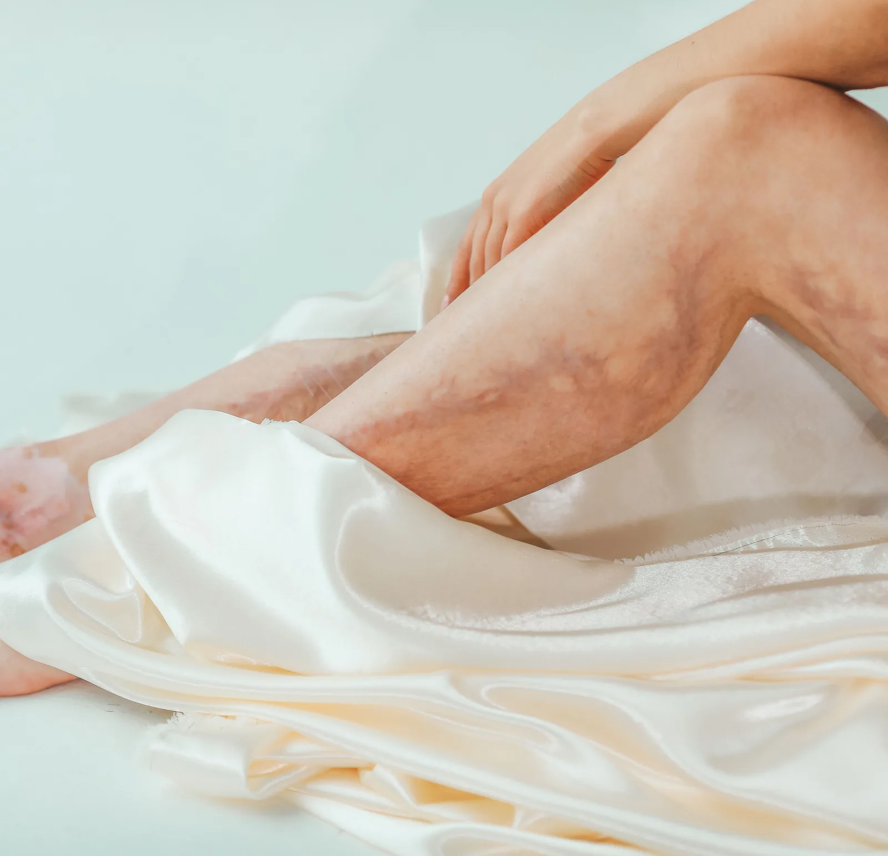

Flebectomía ambulatoria: en qué consiste y cuándo se recomienda
Llegaste a la consulta con una várice puntual: no toda la pierna comprometida, solo un tramo de vena que se nota al final del día y que ya probaste tapar con maquillaje. Para ese caso existe la flebectomía ambulatoria, una técnica con mini-incisiones y anestesia local que no exige cirugía mayor.

La flebectomía ambulatoria casi nunca llega sola a una historia clínica: suele aparecer después de una escleroterapia o una ablación, cuando queda un tramo de vena tributaria que no terminó de cerrarse y sigue marcándose bajo la piel. En Seravena, en el consultorio de El Poblado en Medellín, la planteamos así: como el paso que retira lo que ya salió a la superficie, no como el primer movimiento frente a unas várices nuevas.
¿En qué consiste la flebectomía ambulatoria?
Es un procedimiento de cirugía vascular menor para retirar tramos de vena varicosa visibles bajo la piel. El médico marca primero el recorrido de la vena con la paciente de pie, porque se nota mejor con la gravedad actuando, y luego aplica anestesia local en cada punto a tratar. Con una aguja o un bisturí muy fino abre incisiones de apenas un par de milímetros, del tamaño de la punta de un lápiz, e introduce un instrumento en forma de gancho que sujeta la vena y la retira en segmentos cortos.
No hace falta ni un solo punto de sutura.
El procedimiento completo dura entre 30 minutos y una hora, según cuántos tramos haya que tratar, y termina con un vendaje compresivo sobre cada incisión.
¿Cuándo se recomienda este tratamiento?
Funciona mejor con várices grandes y visibles, cercanas a la piel, del tipo que se llaman tributarias: ramas que salen de una vena principal, no la vena principal en sí. Cuando el eco doppler muestra que el problema de fondo está en la vena safena, el procedimiento casi siempre se combina con una ablación térmica o con la escleroterapia que ya revisamos en nuestra guía de tratamiento de várices sin cirugía: una técnica cierra la vena de origen y la flebectomía retira lo que ya quedó suelto y visible.
En Seravena no proponemos la flebectomía ambulatoria como primer paso cuando el eco doppler muestra que el origen está en la vena safena: ese tramo se trata primero, porque si no, la várice que se retiró vuelve a notarse meses después.
Tampoco es la opción indicada para cualquier paciente. Suele evitarse en personas que no pueden caminar por sí solas después del procedimiento o que no toleran la media de compresión, porque las dos cosas son parte del cuidado inmediato.
Cómo es el día del procedimiento en el consultorio de Medellín
En Seravena se hace con anestesia local, sin necesidad de quirófano ni de ayuno previo. Llegas, el médico revisa contigo el mapa de venas que salió del eco doppler hecho en el mismo consultorio de El Poblado, marca los tramos que se van a tratar y empieza. La mayoría de las pacientes están despiertas todo el tiempo: sienten el ardor breve de la anestesia y, después, solo una sensación de presión.
Vuelves a casa el mismo día.
Recuperación: qué esperar los primeros días
Puedes caminar apenas termina el procedimiento; de hecho, moverte un poco esa misma tarde ayuda a que la circulación no se quede estancada. La media de compresión se usa entre una y tres semanas, según cuánto tejido se trató, y durante ese tiempo conviene evitar quedarte de pie muchas horas seguidas o hacer ejercicio de alto impacto con las piernas. Es normal ver hematomas pequeños y algo de hinchazón alrededor de cada incisión; suelen bajar solos en pocos días. Si antes te hiciste una escleroterapia, los cuidados de la piel en esos primeros días son parecidos a los que ya describimos en cuidados después de la escleroterapia.
Flebectomía ambulatoria o cirugía clásica de várices: no es lo mismo
La cirugía clásica para quitar várices, la safenectomía, retira la vena safena completa, casi siempre con anestesia general o regional y, en muchos casos, con algo de hospitalización. La flebectomía ambulatoria no toca esa vena principal: solo retira las ramas que ya se ven por fuera, con anestesia local y sin internarte. Por eso, cuando el daño está concentrado en ramas sueltas, suele preferirse por su recuperación más corta; cuando compromete la vena principal de forma extensa, la decisión entre una vía y otra se revisa con más calma, y ahí entra todo lo que explicamos en cirugía de várices o sin cirugía: cómo decidir.
Esto no resuelve una insuficiencia venosa de fondo: solo retira lo que ya salió a la superficie. Si la vena de origen sigue fallando, pueden aparecer várices nuevas más adelante, aunque la vena tratada en la flebectomía no vuelve a crecer donde se quitó.
Si lo que tienes es esa várice puntual y quieres saber si tu caso encaja en una escleroterapia en Medellín o necesita este paso adicional, eso se resuelve con un eco doppler, no a simple vista.
Si ya te hiciste una escleroterapia o una ablación y notas que un tramo de vena sigue marcado bajo la piel, anota desde cuándo lo ves así y si duele al tocarlo. Con esa nota, en una valoración, el especialista puede decirte si ese tramo necesita una flebectomía ambulatoria o si todavía es pronto para intervenir. Puedes agendar esa valoración cuando quieras.
Preguntas frecuentes
¿La flebectomía ambulatoria duele?
No, porque se hace con anestesia local. Puede haber un ardor breve al aplicar la anestesia y después una sensación de presión al retirar la vena, pero no un dolor agudo.
¿Necesito anestesia general para este procedimiento?
No. La flebectomía ambulatoria se hace con anestesia local, en consultorio, y la mayoría de las pacientes están despiertas todo el tiempo y se van a casa el mismo día.
¿Cuánto dura la recuperación de una flebectomía ambulatoria?
Puedes caminar el mismo día y retomar actividades cotidianas en 24 a 48 horas. La media de compresión se usa entre una y tres semanas, y conviene evitar estar de pie muchas horas seguidas o hacer ejercicio de alto impacto mientras tanto.
¿La flebectomía ambulatoria se hace sola o siempre se combina con otro tratamiento?
Depende del caso. Cuando el problema viene de la vena safena, casi siempre se combina con una ablación o una escleroterapia que cierra esa vena primero; cuando solo hay ramas sueltas y visibles, puede bastar por sí sola.